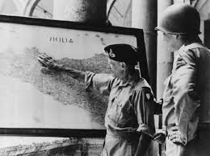

L’incontro tra le potenze alleate

Nel gennaio 1943, ebbe luogo in Marocco l’importante conferenza di Casablanca. In questa occasione, le potenze alleate decisero che era necessario attaccare direttamente l’Italia.
Punti di vista differenti
In questa sede si giunse a una sintesi tra punti di vista estremamente differenti. Per quanto schierati nel medesimo fronte e ormai a più di tre anni dall’inizio del conflitto, l’Unione Sovietica e le forze angloamericane intendevano proseguire la guerra contro le potenze dell’Asse (Italia, Germania, Giappone) concentrando le forze militari su aree diverse. Gli Stati Uniti e l’Inghilterra intendevano prima portare a compimento positivamente il conflitto in Africa e poi spostarsi nell’area dell’Europa meridionale, e dunque in Italia.

Italia: fronte strategico
L’Italia rappresentava un fronte strategico per più ragioni: essa era ormai attraversata dai segni di un progressivo scollamento tra popolazione e regime fascista ed era vicina alle coste del Nord Africa dove le forze angloamericane avrebbero poi riportato decisive vittorie. Infine, la crisi militare vissuta dall’esercito italiano rendeva un potenziale sbarco sulle coste italiane una sfida non eccessivamente dispendiosa.
L’Unione Sovietica e il fronte settentrionale
L’Unione Sovietica, invece, premeva per l’apertura di un altro fronte nelle aree settentrionali dell’Europa. L’obiettivo dell’Unione Sovietica era infatti di ridurre la pressione delle forze naziste contro i suoi territori che, proprio a partire dall’estate del 1942, erano stati attaccati dai nazisti. Le armate del generale nazista Von Paulus si sarebbero arrese a Stalingrado solo il 2 febbraio del 1943, quindi alcune settimane dopo la conferenza di Casablanca.
La decisione finale: il fronte nell’Europa meridionale
In questa sede, venne stabilito di seguire la volontà delle forze alleate. Inghilterra e Stati Uniti ebbero dunque la meglio e al tempo stesso si stabilì che il termine del conflitto sarebbe stato raggiunto solo in base alla resa incondizionata degli avversari, e nello specifico, della Germania. La scelta di aprire un fronte nell’Europa meridionale venne dunque presa in questa conferenza internazionale.